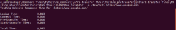

Время отклика веб-сайта может иметь большое влияние на пользовательский интерфейс, а если вы являетесь веб-разработчиком или просто администратором сервера, который несет особую ответственность за организацию всех частей вместе, то вам нужно сделать так, чтобы пользователи не чувствовали разочарование при доступе к вашему сайту — так что на самом деле существует «need for speed».
В этом руководстве будет показано, как тестировать время отклика веб-сайта из командной строки Linux.
Здесь мы покажем, как проверить время в секундах, это определяется по:
Кроме того, для сайтов с поддержкой HTTPS мы также увидим, как тестировать время, в секундах, для его завершения: для перенаправления и подключения SSL / установления связи к серверу.
Звучит неплохо, хорошо, давайте начнем.
cURL — это мощный инструмент командной строки для передачи данных с сервера или на сервер с использованием таких протоколов, как FILE, FTP, FTPS, HTTP, HTTPS и многих других.
В большинстве случаев он используется как загрузчик командной строки или для проверки HTTP-заголовков.
Однако здесь мы опишем одну из его менее известных функций.
cURL имеет полезную возможность: -w для вывода информации о stdout после завершения операции.
В нем есть некоторые переменные, которые мы можем использовать для тестирования различных ответов, перечисленных выше, на веб-сайте.
Мы будем использовать некоторые связанные с временем переменные, которые могут передаваться в заданном формате в виде строки или внутри файла.
Итак, откройте терминал и выполните следующую команду:
$ curl -s -w 'Testing Website Response Time for :%{url_effective}\n\nLookup Time:\t\t%{time_namelookup}\nConnect Time:\t\t%{time_connect}\nPre-transfer Time:\t%{time_pretransfer}\nStart-transfer Time:\t%{time_starttransfer}\n\nTotal Time:\t\t%{time_total}\n' -o /dev/null http://www.google.com
Переменные в приведенном выше формате команды curl:

Если формат слишком длинный, вы можете записать его в файл и использовать синтаксис ниже, чтобы прочитать его:
$ curl -s -w "@format.txt" -o /dev/null http://www.google.com
В приведенной выше команде флаг:
-s — говорит curl, чтобы работать скрытно
-w — выводить информацию о стандартном выводе.
-o — используется для перенаправления вывода (здесь мы отбрасываем вывод, перенаправляя его на / dev / null).
Для сайтов HTTPS вы можете запустить следующую команду:
$ curl -s -w 'Testing Website Response Time for :%{url_effective}\n\nLookup Time:\t\t%{time_namelookup}\nConnect Time:\t\t%{time_connect}\nAppCon Time:\t\t%{time_appconnect}\nRedirect Time:\t\t%{time_redirect}\nPre-transfer Time:\t%{time_pretransfer}\nStart-transfer Time:\t%{time_starttransfer}\n\nTotal Time:\t\t%{time_total}\n' -o /dev/null https://www.google.com
В приведенном выше формате новые переменные времени:
Важные моменты, которые следует отметить.
Вы заметите, что значения времени ответа продолжают меняться (из-за нескольких факторов) при выполнении разных тестов, поэтому желательно собрать несколько значений и получить среднюю скорость.
Во-вторых, из результатов приведенных выше команд вы можете видеть, что доступ к сайту через HTTP намного быстрее, чем через HTTPS.
Для получения дополнительной информации см. Справочную страницу cURL:
$ man curl